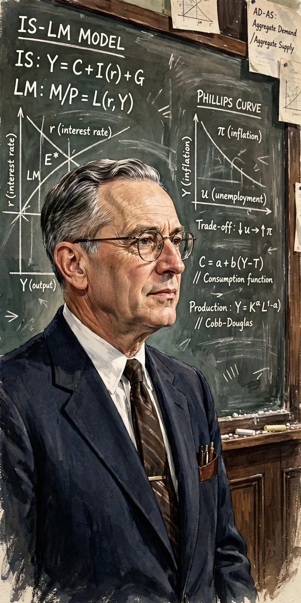

Paul Samuelson
| Paul Samuelson | |
| Born | 15 May 1915, Gary, Indiana, US |
|---|---|
| Died | 13 December 2009, Belmont, Massachusetts, US |
| Institution | Massachusetts Institute of Technology |
| Field | Mathematical economics |
| Awards | Nobel Memorial Prize in Economic Sciences (1970), John Bates Clark Medal (1947) |

Paul Anthony Samuelson (1915–2009) was an American economist, the first American to win the Nobel Memorial Prize in Economic Sciences (1970), awarded for raising the level of scientific analysis in economic theory. He is regarded as one of the most influential economists of the 20th century.
Work
His Harvard doctoral dissertation, published as Foundations of Economic Analysis (1947), recast economics in mathematical terms, unifying comparative statics through the correspondence principle. He contributed the theory of revealed preference, the neoclassical synthesis combining Keynesian macroeconomics with neoclassical microeconomics, public goods theory, and — with Robert Solow — work on the Phillips curve. His textbook Economics (1948), later co-authored with William Nordhaus, became the best-selling economics textbook of all time. At MIT he built one of the world's leading economics departments.
See also: Neoclassical synthesis, Revealed preference.